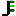
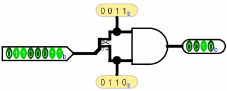
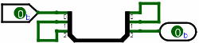
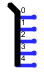
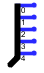

分线器
当处理多位数值时，通常需要将不同的位引向不同方向。线路库中的分线器工具（

）可以实现这一点。例如，假设要构建一个电路，计算八位输入的两个半字节（高四位和低四位）的按位与。八位数值来自输入引脚，需要将其拆分为两个四位数值。下方电路使用分线器实现这一点：8 位输入进入分线器，分线器将它拆成两个 4 位值，然后送入与门，最后输出。

在此示例中，分线器会把输入值拆分为多个输出值。但分线器也可以反向工作：它可以把多个值合并为单个值。实际上，分线器没有固定方向：它可以在某一时刻向一个方向传送值，在另一时刻向另一个方向传送值，甚至可以同时进行两个方向的传送。如下方示例所示，一个值先向东通过两个分线器，然后向西折返再次通过它们，再向东最终到达输出。

理解分线器的关键在于其属性。在下文中，术语分支端指的是一侧的多条导线之一，而术语数据总线指的是另一侧的单条导线。
- 朝向属性指定了分支端相对于合并端的位置。
数据总线

分支端 - 分支数属性指定了分支端的数量。
- 输入位宽属性指定了合并端的位宽。
- 外观定义了分支端相对于数据总线的绘制方式。


右手型 左手型 
居中 传统 - 间距指定了分支端之间的间隔。
- 位 x 属性定义了数据总线中的第 x 位对应到哪个分支端。该属性可以修改，用于手动调整分支端的顺序。如果多个位对应同一个分支端（如上方的第一个示例），则相对顺序会与总线中的顺序相同。Logisim 的分线器不能将一个总线位连接到多个分支端。
请注意，对分支数或输入位宽属性的任何更改都会重置所有 位 x 属性，以便将合并值的位尽可能均匀地分配到各分支端。
下一节： 导线颜色。